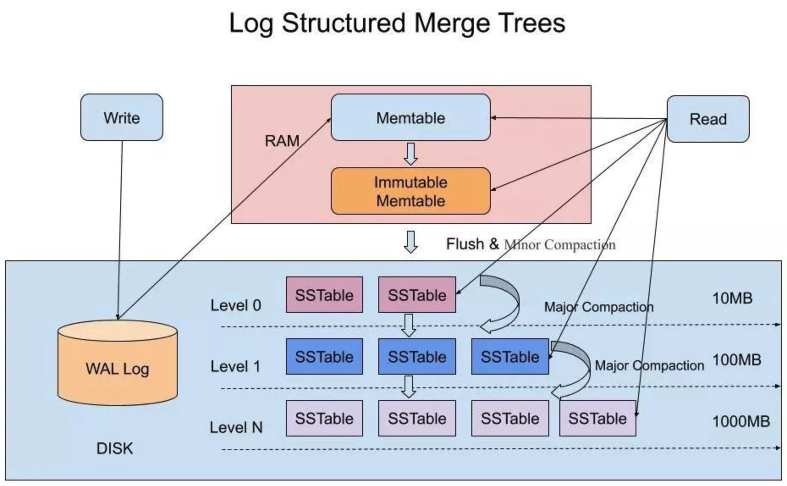
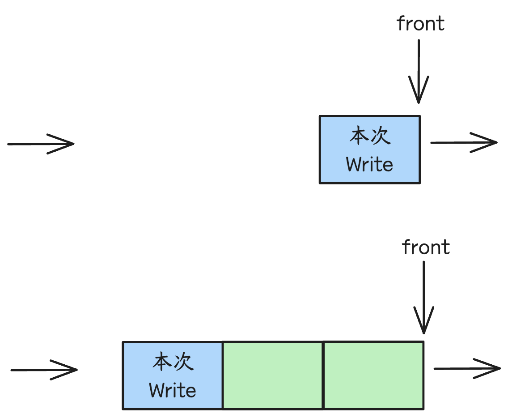
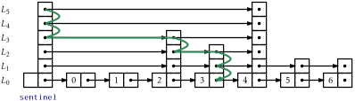
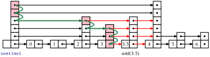

读码：LevelDB - 接口定义与数据写入
0、设计概要&接口定义

基于 DB 类的静态方法 Open 来打开/初始化一个数据库，Open 会实例化一个 DBImpl 对象，调用其私有方法 Recover 来恢复/初始化状态，并将 DBImpl 对象指针赋值给 dbptr 返回给调用方，调用方通过 dbptr 调用 Put/Write/Delete/Get/NewIterator 进行读写操作。
1、WriteBatch
Put 和 Delete 是针对单个 key 进行操作，在底层会将键值操作包装成 WriteBatch 对象，然后调用 Write 接口执行实际的操作流程。
也可以在调用侧实例化 WriteBatch 对象，将一批增删操作都先填充到 WriteBatch 对象，然后直接调用 Write 接口执行一批操作，这样写吞吐应该会更高一点。这批操作是原子的（一起写成功或者失败）。
//
typedef uint64_t SequenceNumber; // 虽然序列号使用了的 uint64_t 类型，但是实际只会使用 56 比特，即最大值为 ((0x1ull << 56) - 1)
// We leave eight bits empty at the bottom so a type and sequence#
// can be packed together into 64-bits.
static const SequenceNumber kMaxSequenceNumber = ((0x1ull << 56) - 1);
//
typedef SkipList<const char*, KeyComparator> Table;rep_ 存储结构
// WriteBatch::rep_ :=
// sequence: fixed64
// count: fixed32
// data: record[count]
// record :=
// kTypeValue varstring varstring |
// kTypeDeletion varstring
// varstring :=
// len: varint32
// data: uint8[len]$SequenceNum$ 是当前 WriteBatch 所有操作的基准序列号，即 WriteBatch 中第一个操作的序列号为 $SequenceNum + 0$ ，第二个操作的序列号为 $SequenceNum + 1$，依次类推。为每次操作分配一个唯一的序列号，是为了方便实现快照能力。后面再解释。
2、写入缓冲与攒批
leveldb 的 write 写入过程基于 Writer （双端）队列实现缓冲和可能的攒批（合并多个 WriteBatch），提升写入的吞吐性能。攒批的性能空间来自 - 如果写入时发现 level0 文件过多（compaction 未完成，影响读/检索性能），则认为需要对写入进行限速，将写入先在 Write 队列中缓冲，攒 1ms 左右，合并成一个大的 WriteBatch 然后写入 memtable。
如果本次写入的 Writer 为队列头部，则说明当前写入压力应该不大，可以直接进行写入操作 -
- 1、先确认写入条件是否满足：
- (1) level0 文件数是否超过阈值（8），如果超过，说明写入压力有点大（都来不及 minor compaction 啦），则释放互斥锁，当前线程休眠 1ms（攒批的性能空间在这！）
- （2） 如果当前 memtable 空间已满（默认大小 4MB，可配置），并且前一个 memtable（当前已不可变）还没有被 compaction 落盘或者 level0 文件数操作更大的一个阈值（12），则等待后台 compaction 完成
- （3） 如果当前 memtable 空间已满，但是前一个 memtable 已被 compaction 且 level0 文件数也不多，则将当前 memtable 切换为不可变 memtable，并申请一个新的 memtable，同时清理掉当前的 WAL log 文件，准备个新的 WAL log 文件。
- 2、遍历 Writer 队列，直到队尾或者遇到一个非异步写入操作或者达到攒批大小阈值，将遍历到的 Writer 中的 WriteBatch 合并成一个 WriteBatch
- 3、将合并后的 WriteBatch 的
rep_先写入 WAL log 文件 - 4、然后将 WriteBatch 中的操作按序解析出来，写入 memtable (Put 或 Delete)。
如果本次写入的 Writer 非队列的头部，等待之前写入队列的线程攒批处理，以及最后被唤醒。
如果不考虑等待 compaction，整个写入过程最慢的步骤是写 WAL 日志，所以 WriteBatch 设计是为 WAL 日志写入优化的，对于 memtable 写入反而多了一点解析的性能开销。
3、WAL log 文件
static const int kBlockSize = 32768;
// Header is checksum (4 bytes), length (2 bytes), type (1 byte).
static const int kHeaderSize = 4 + 2 + 1;leveldb 会将 WriteBatch 的 rep_ 当作字节序列写入 log 文件中。不过 log 文件存储的单元结构为块（block），块大小为 32768 字节。一个 WriteBatch 的 rep_ 的大小可能大于/等于/小于一个块大小，也就是写入一个 rep_ 可能填不满一个块或者正好填满一个块或者跨多个块。
如果一次写入后，当前 block 剩余的空间不足以填充下一次写入的头部，则直接将剩余空间以 \x00 填满。
这样编码的好处？- 读取解析时，按块大小进行读取，速度更快，顺序解析也方便。
“WAL log” 的核心作用：写入 memtable 的键值对数据，并没有落盘到 ldb 数据库文件中，如果在 minor compaction 成 $level_0$ 文件之前，机器节点故障，导致 memtable 以及不可变 memtable 中的数据丢失，还可以通过“WAL log” 文件内容来恢复。
那也意味着，如果一旦不可变 memtable 数据 compaction 到 $level_0$ 文件后，这些数据状态对应的“WAL log” 内容就没没有实际用处了，可以及时清理掉。
leveldb 写入数据时，如果发现 memtable 占用内存已达到阈值，并且不可变 memtable 数据已被 minor compaction 成 $level_0$ 文件，则会将 memtable 切换成不可变 memtable，同时创建一个新的“WAL log”，并申请一个新的 memtable。不过此时新的不可变 memtable 还没被 minor compaction 成 $level_0$ 文件，所以前一个“WAL log”文件也还要保留，不能删除。
4、MemTable
typedef SkipList<const char*, KeyComparator> Table;MemTable 是对应一个“WAL log” 文件的内存存储结构。单个 MemTable 内存占用阈值为 4MB(write_buffer_size)，当可变 MemTable 的内存占用达到阈值时，就尝试切换成不可变 MemTable，并创建一个新的 WAL log 文件以及对应的可变 MemTable 来承接写入，而不可变 MemTable 的内容等待被 minor compaction 刷成一个 $level_0$ ldb 数据文件。
// Amount of data to build up in memory (backed by an unsorted log
// on disk) before converting to a sorted on-disk file.
//
// Larger values increase performance, especially during bulk loads.
// Up to two write buffers may be held in memory at the same time,
// so you may wish to adjust this parameter to control memory usage.
// Also, a larger write buffer will result in a longer recovery time
// the next time the database is opened.
size_t write_buffer_size = 4 * 1024 * 1024;4.1 Arena
Arena 的特点是整块内存申请，整块内存一次性释放，从而优化内存的申请释放开销。
leveldb 里 Arena 的生命周期与 MemTable 对象保持一致，MemTable 对象的所有 Add 操作涉及的内存分配都在同一 Arena 对象上进行， MemTable 对象切换成不可变状态并存储为 level0 ldb 文件后，Arena 对象的所有内存块随着 MemTable 对象析构而一次性释放。
static const int kBlockSize = 4096;从 Arena 申请内存空间时，如果最新一个可用块的剩余内存大小（alloc_bytes_remaining_）小于当前申请的内存大小 bytes，则先申请一个新的内存块，然后从新内存块上分配内存空间 - 如果当前申请的内存大小大于整块大小的 1/4，则单独占用一个内存块。
所以 Arena 内存块大小必须大于实际一次申请的最大内存，并且为减少内存碎片，应该要根据代码中实际的内存分配情况来确定 Arena 内存块大小。
MemTable 的 Arena 内存块大小只有一种。有些项目中内存分配情况比较复杂的话，其 Arena 设计通常会使用多种内存块大小 ，以此提高灵活性，减少内存碎片浪费。
4.2 Table - 跳表
跳表可以兼顾有序链表的快速查找、快速插入/删除、遍历，算法复杂度 $O(logN)$，实现简单。
查找过程示意图
插入过程示意图
跳表定义
template <typename Key, class Comparator>
class SkipList {
public:
explicit SkipList(Comparator cmp, Arena* arena);
void Insert(const Key& key);
bool Contains(const Key& key) const;
private:
Comparator const compare_;
Arena* const arena_; // Arena used for allocations of nodes
Node* const head_;
// Modified only by Insert(). Read racily by readers, but stale
// values are ok.
std::atomic<int> max_height_; // Height of the entire list
// Read/written only by Insert().
Random rnd_;
}跳表节点定义
template <typename Key, class Comparator>
struct SkipList<Key, Comparator>::Node {
explicit Node(const Key& k) : key(k) {}
Key const key;
private:
// Array of length equal to the node height. next_[0] is lowest level link.
std::atomic<Node*> next_[1];
}key存储节点实际的值next_数组中每个指针指向横向的邻居节点
memtable 对跳表模板实际使用的实际类型为：
typedef SkipList<const char*, KeyComparator> Table;对 Key - char* 的实际编码方式：
class MemTableInserter : public WriteBatch::Handler {
public:
SequenceNumber sequence_;
MemTable* mem_;
void Put(const Slice& key, const Slice& value) override {
mem_->Add(sequence_, kTypeValue, key, value); // 插入
sequence_++;
}
void Delete(const Slice& key) override {
mem_->Add(sequence_, kTypeDeletion, key, Slice()); // 删除
sequence_++;
}
};
void MemTable::Add(SequenceNumber s, ValueType type, const Slice& key,
const Slice& value) {
// Format of an entry is concatenation of:
// key_size : varint32 of internal_key.size()
// key bytes : char[internal_key.size()]
// tag : uint64((sequence << 8) | type)
// value_size : varint32 of value.size()
// value bytes : char[value.size()]
size_t key_size = key.size();
size_t val_size = value.size();
size_t internal_key_size = key_size + 8; // 另外8字节存储 Tag
const size_t encoded_len = VarintLength(internal_key_size) +
internal_key_size + VarintLength(val_size) +
val_size;
char* buf = arena_.Allocate(encoded_len);
char* p = EncodeVarint32(buf, internal_key_size);
std::memcpy(p, key.data(), key_size);
p += key_size;
EncodeFixed64(p, (s << 8) | type);
p += 8;
p = EncodeVarint32(p, val_size);
std::memcpy(p, value.data(), val_size);
assert(p + val_size == buf + encoded_len);
table_.Insert(buf);
}- 整数变长编码：“key 长度” 和 “value 长度”正常是32bit（4字节）整数，但 key 和 value 实际可能是比较短的字节序列（比如：长度小于128时，只要1个字节就能存储长度，而不是4字节）。
- 序列号仅使用尾部7个字节：序列号大小不会超过7个字节？确认一下哪里有约束
- 操作/值类型：
kTypeValue = 0x1表示当前操作为 插入，有对应的值kTypeDeletion = 0x0表示当前操作为 删除，无对应的值（或者说值为空）。正常来说，后面无需再编码“value 长度” 和 “value 值”，不过代码实现中似乎还是占用了1个字节来存储“value 长度” 0，可以优化？。
KeyComparator 的定义：
struct KeyComparator {
const InternalKeyComparator comparator;
explicit KeyComparator(const InternalKeyComparator& c) : comparator(c) {}
int operator()(const char* a, const char* b) const; //
};
int MemTable::KeyComparator::operator()(const char* aptr,
const char* bptr) const {
// Internal keys are encoded as length-prefixed strings.
Slice a = GetLengthPrefixedSlice(aptr); // 取出 internal key（包含 tag）
Slice b = GetLengthPrefixedSlice(bptr);
return comparator.Compare(a, b);
}
class InternalKeyComparator : public Comparator {
private:
const Comparator* user_comparator_; // 用户可配置自定义的 key 比较器，默认为 BytewiseComparator - 逐个字节比较
public:
explicit InternalKeyComparator(const Comparator* c) : user_comparator_(c) {}
const char* Name() const override;
int Compare(const Slice& a, const Slice& b) const override;
void FindShortestSeparator(std::string* start,
const Slice& limit) const override;
void FindShortSuccessor(std::string* key) const override;
const Comparator* user_comparator() const { return user_comparator_; }
int Compare(const InternalKey& a, const InternalKey& b) const;
};
int InternalKeyComparator::Compare(const Slice& akey, const Slice& bkey) const {
// Order by:
// increasing user key (according to user-supplied comparator)
// decreasing sequence number
// decreasing type (though sequence# should be enough to disambiguate)
int r = user_comparator_->Compare(ExtractUserKey(akey), ExtractUserKey(bkey)); // ExtractUserKey 会忽略 Tag，比较原始 key
if (r == 0) {
const uint64_t anum = DecodeFixed64(akey.data() + akey.size() - 8); // 取出 Tag
const uint64_t bnum = DecodeFixed64(bkey.data() + bkey.size() - 8); // 取出 Tag
if (anum > bnum) { // 比较 Tag（序列号 + 操作类型）
r = -1;
} else if (anum < bnum) {
r = +1;
}
}
return r;
}实际的比较逻辑为：
- 1、先比较原始的 key，小的排在前面
- 2、如果原始 key 相等，则比较序列号，序列号大的排在前面（有点奇怪？这个逻辑很关键！点查/有序遍历/compaction 同 key 记录去重等依赖这个逻辑）
4.3 引用计数
MemTable 使用的 引用计数 变量 int refs_，不是原子变量，所以计数增减都需要加互斥锁。并且因为计数减到小于等于0时， memtable 还需要析构自己，所以必须加锁。
// Drop reference count. Delete if no more references exist.
void Unref() {
--refs_;
assert(refs_ >= 0);
if (refs_ <= 0) {
delete this;
}
}